Boxpark Sushi
As part of the Master of Fine Arts program at Full Sail University, students were tasked with creating a new brand for a fictional sushi restaurant in London called Boxpark Sushi. The restaurant would be located in a shopping center called Boxpark Shoreditch, which was constructed out of repurposed shipping containers. The Shoreditch area in which the shopping center is located is young, trendy and artistic.
I began the project by getting to know more about Boxpark Shoreditch and the surrounding neighborhood. The area is a hub for street artists, and I wanted my design to reflect that. I researched sushi restaurants, both high-end locations and more casual spots. I wanted the designs to split the difference between trendy and casual.
Featured below is the logo I developed along with several mockups featuring the logo in use. I've also included a mockup of the Boxpark Sushi homepage as it would appear on a desktop and a mobile web browser.
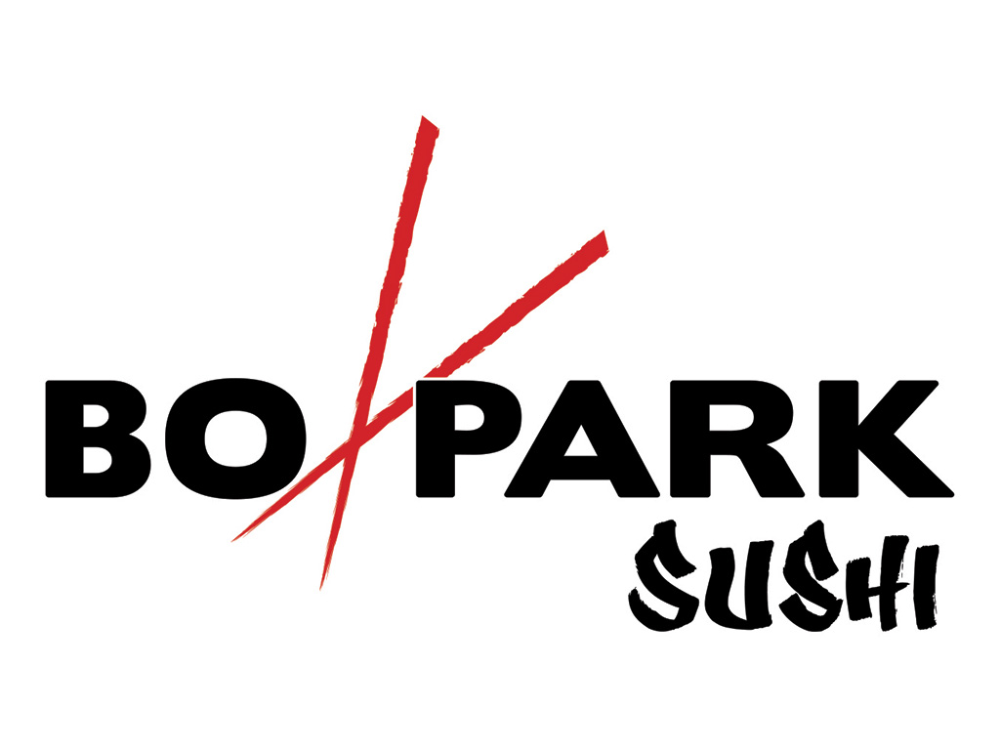 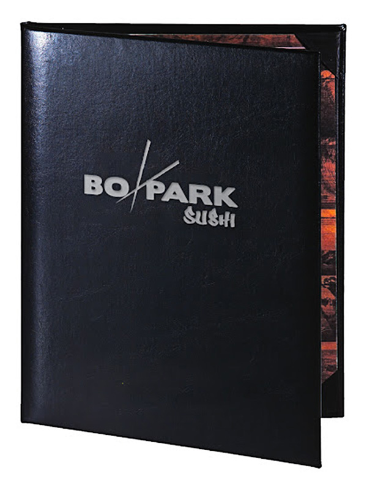
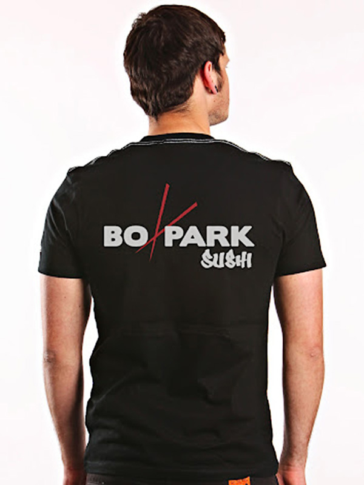
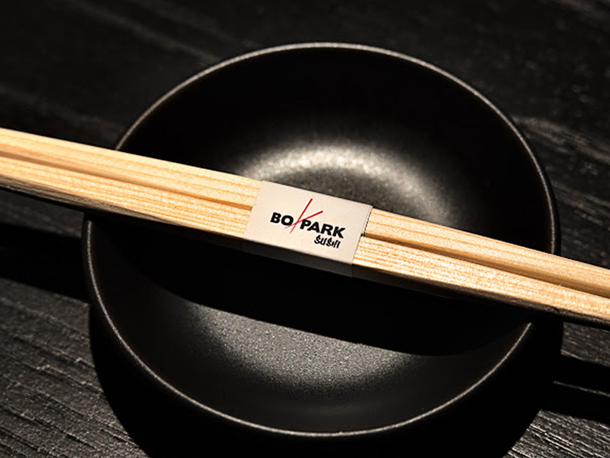
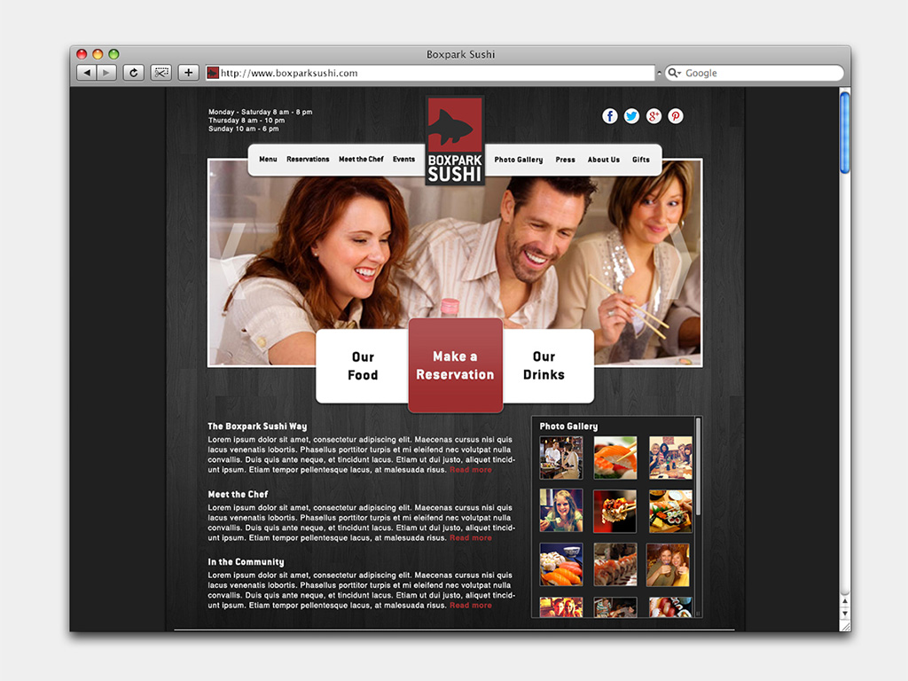
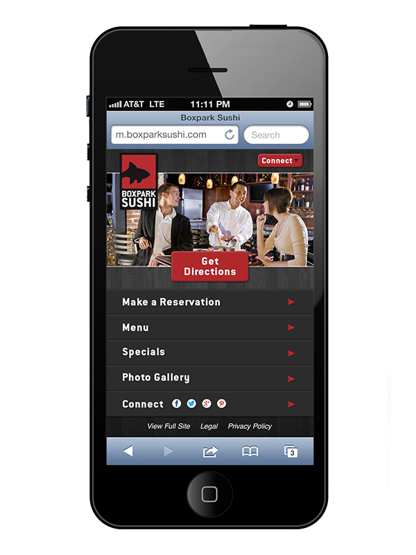
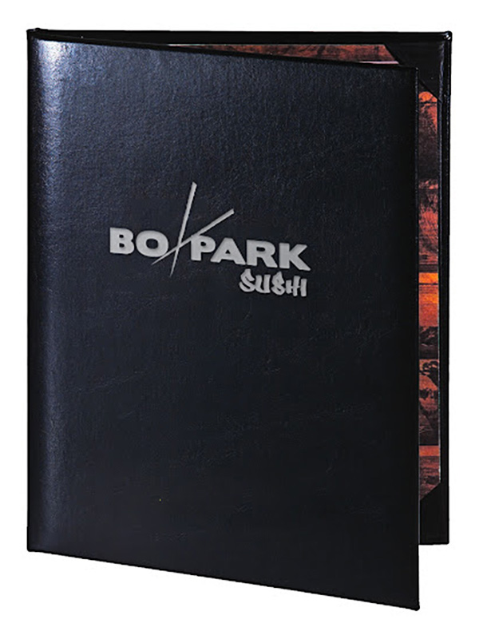
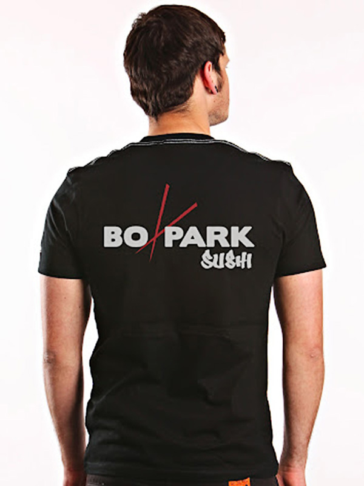
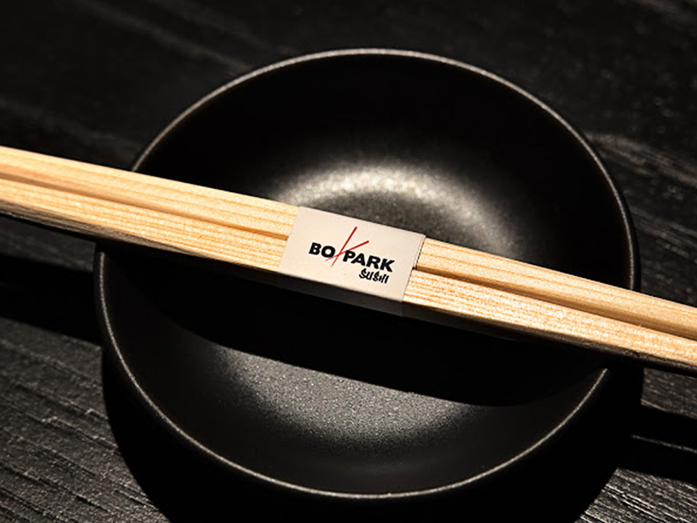
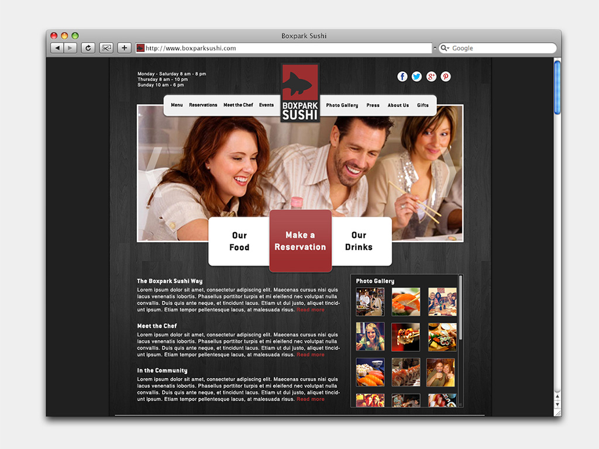
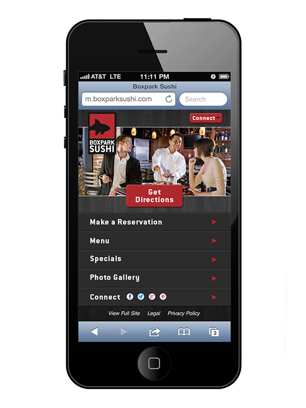
The following dynamic moodboard was developed by me as part of a group project. Our group picked one of our logo concepts and created our videos based on that concept.